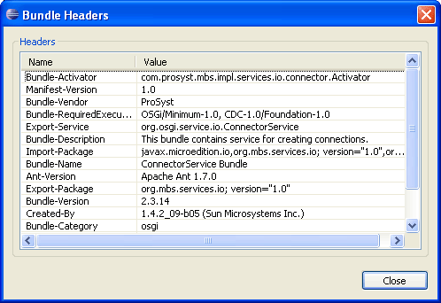

From the Frameworks view you can access the content of the manifest headers of a specific bundle running on a connected OSGi framework.
To view the headers of a bundle's manifest, locate the bundle from the framework's tree, right-click it and select Properties. The Bundle Headers dialog appears showing the manifest headers of the selected bundle.

Figure 1: Viewing the content of a bundle's manifest.

OSGi Management Overview
OSGi Frameworks Tree

Installing and Uninstalling a Bundle

Frameworks View
Frameworks View Menus and Toolbar